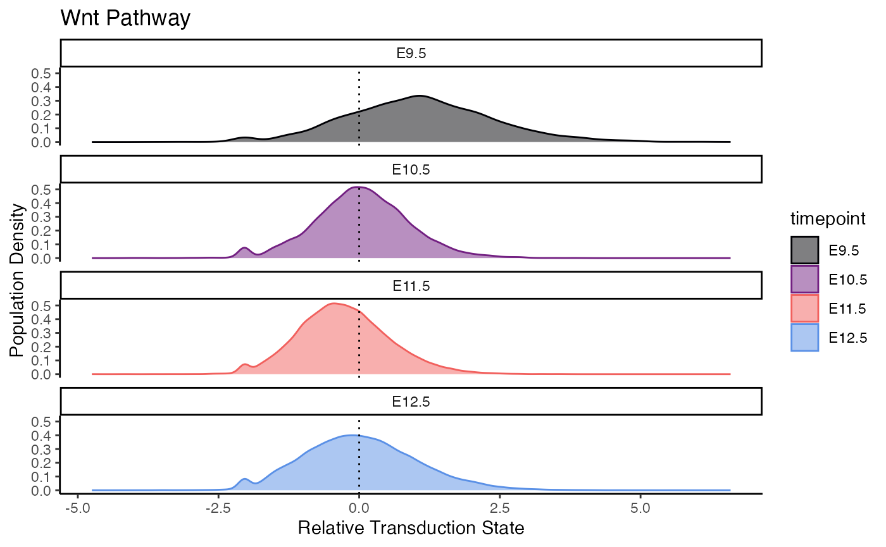
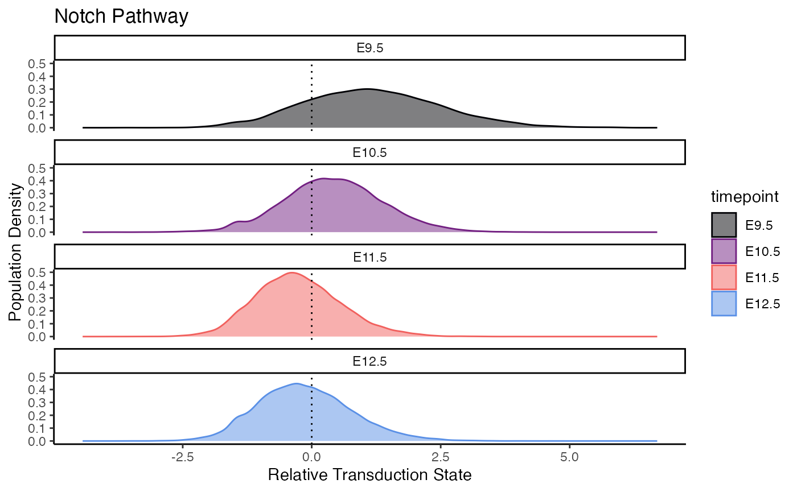
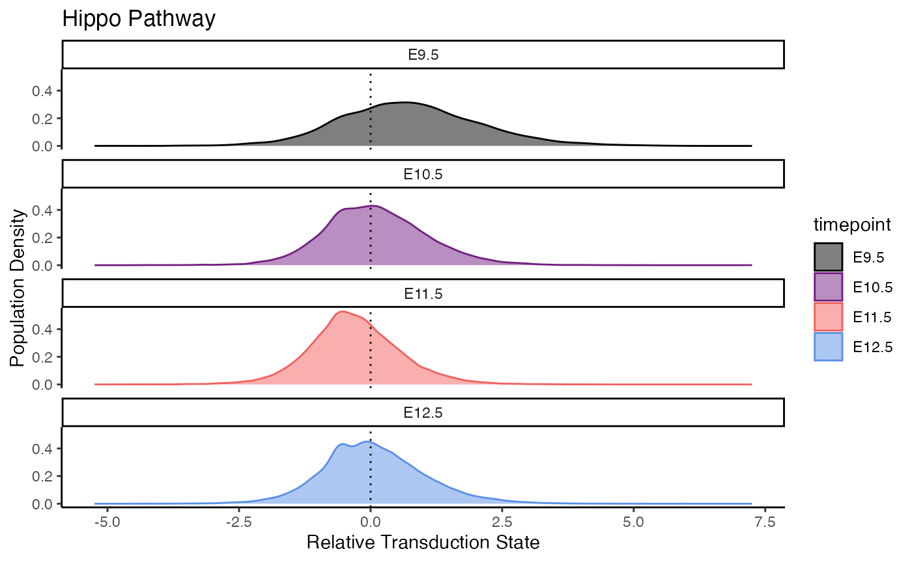
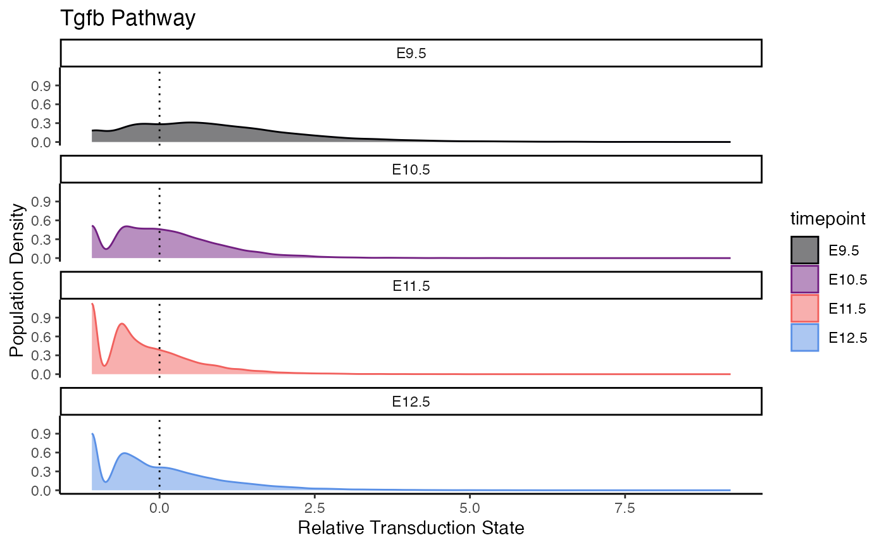
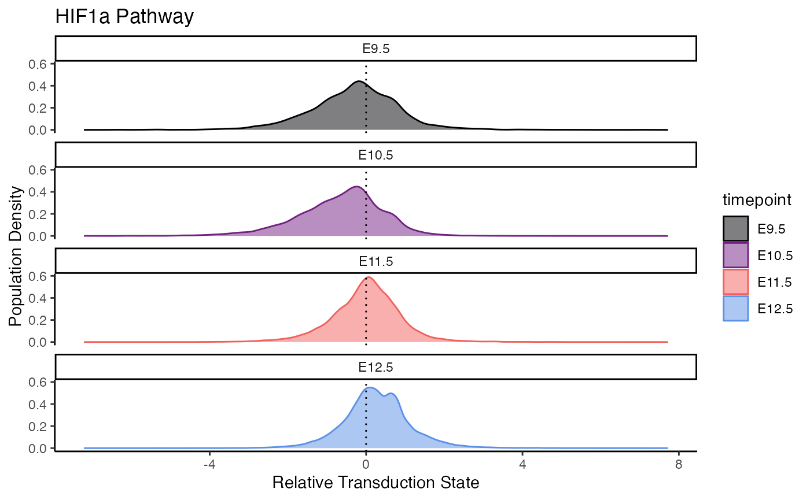
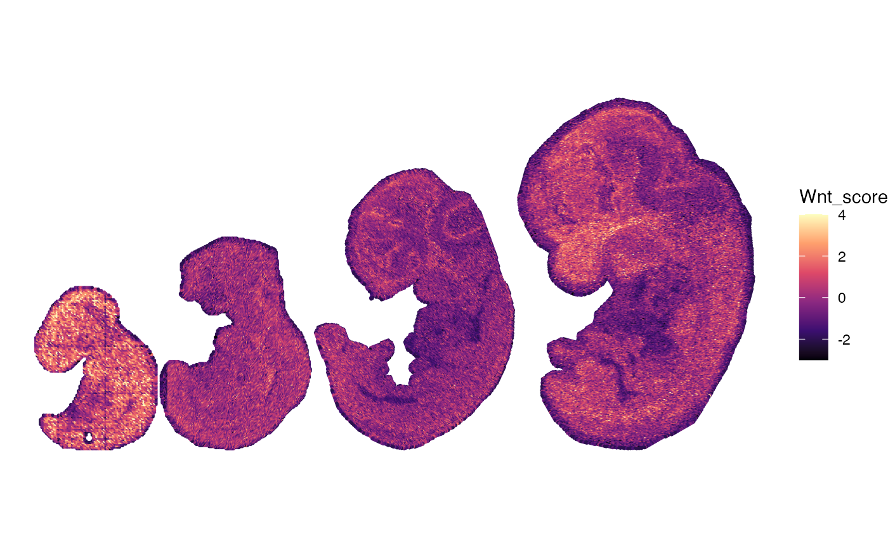
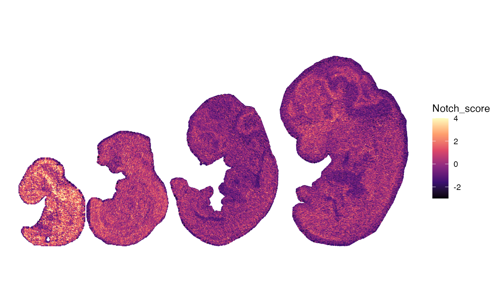
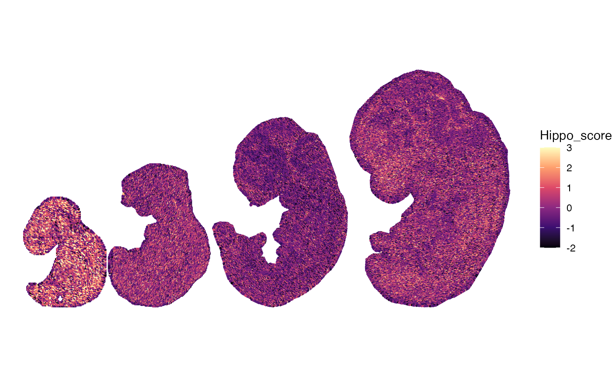
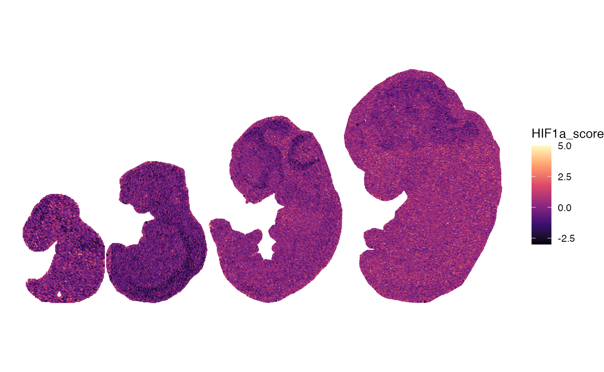

spatial_pathway.RmdThis vignette demonstrates the application of PathwayEmbed in mouse embryo spatial data (E9.5 - E12.5). With curated pathway database, we examined and compared Wnt, Notch, TGFb, Hippo, and HIF-1a signaling transduction states across spatial and temporal development. Reference for the initial data: Chen et al. Spatiotemporal transcriptomic atlas of mouse organogenesis using DNA nanoball-patterned arrays, Cell, Volume 185, Issue 10, 2022, Pages 1777-1792.e21.
knitr::opts_chunk$set(echo = TRUE)
# load library
library(PathwayEmbed)
library(Seurat)## Loading required package: SeuratObject## Loading required package: sp## 'SeuratObject' was built under R 4.4.1 but the current version is
## 4.4.2; it is recomended that you reinstall 'SeuratObject' as the ABI
## for R may have changed##
## Attaching package: 'SeuratObject'## The following objects are masked from 'package:base':
##
## intersect, t## Loading required package: viridisLiteThe files can be downloaded from figshare via below link:
Huang, Yaqing (2025). dat3.with.niches.norm.Robj. figshare. Dataset. https://doi.org/10.6084/m9.figshare.29649995.v1
Huang, Yaqing (2025). dat4.with.niches.norm.Robj. figshare. Dataset. https://doi.org/10.6084/m9.figshare.29649989.v1
Huang, Yaqing (2025). dat1.with.niches.norm.Robj. figshare. Dataset. https://doi.org/10.6084/m9.figshare.29649992.v1
Huang, Yaqing (2025). dat2.with.niches.norm.Robj. figshare. Dataset. https://doi.org/10.6084/m9.figshare.29649986.v1
Compute score for Wnt, Notch, Hippo, Tgfb, and HIF-1a pathways for the merged subject using ‘ComputeCellData’ in PathwayEmbed
# Compute the score for each pathway
Wnt_mds <- ComputeCellData(merged_spatial, "Wnt", "manhattan", batch.size = 1000)
Notch_mds <- ComputeCellData(merged_spatial, "Notch", "manhattan", batch.size = 1000)
Hippo_mds <- ComputeCellData(merged_spatial, "Hippo", "manhattan", batch.size = 1000)
Tgfb_mds <- ComputeCellData(merged_spatial, "Tgfb", "manhattan", batch.size = 1000)
HIF1a_mds <- ComputeCellData(merged_spatial, "HIF-1a", "manhattan", batch.size = 1000)
# Process the mds
Wnt_to.plot <- PreparePlotData(merged_spatial, Wnt_mds, "timepoint")
Notch_to.plot <- PreparePlotData(merged_spatial, Notch_mds, "timepoint")
Hippo_to.plot <- PreparePlotData(merged_spatial, Hippo_mds, "timepoint")
Tgfb_to.plot <- PreparePlotData(merged_spatial, Tgfb_mds, "timepoint")
HIF1a_to.plot <- PreparePlotData(merged_spatial, HIF1a_mds, "timepoint")
# Combine to list
pathway_list <- list(
Wnt = Wnt_to.plot,
Notch = Notch_to.plot,
Hippo = Hippo_to.plot,
Tgfb = Tgfb_to.plot,
HIF1a = HIF1a_to.plot
)
# Color set-up
magma_colors <- c("#000004FF", "#721F81FF", "#F1605DFF", "#5A90E6")
# Desired timepoint order
ordered_timepoints <- c("E9.5", "E10.5", "E11.5", "E12.5")
# Reorder timepoint levels
for (name in names(pathway_list)) {
pathway_list[[name]]$timepoint <- factor(pathway_list[[name]]$timepoint, levels = ordered_timepoints)
}
# Loop through each pathway and generate/save the plot
for (i in seq_along(pathway_list)) {
# Generate the plot
p <- PlotPathway(pathway_list[[i]], names(pathway_list)[i], "timepoint", magma_colors) +
facet_wrap(~timepoint, ncol = 1)
print(p)
}
# Step 1: Create named score vectors for each pathway
score_list <- lapply(pathway_list, function(df) {
s <- df$scale
names(s) <- rownames(df)
return(s)
})
# Step 2: Add each pathway score to dat1–dat4
for (i in 1:4) {
dat <- get(paste0("dat", i)) # get dat1, dat2, ...
for (pathway_name in names(score_list)) {
score_vec <- score_list[[pathway_name]]
dat[[paste0(pathway_name, "_score")]] <- score_vec[colnames(dat)]
}
assign(paste0("dat", i), dat) # assign back to dat1, dat2, etc.
}
# List of Seurat objects
dat_list <- list(dat1, dat2, dat3, dat4)
names(dat_list) <- paste0("dat", 1:4)
# List of pathways
pathways <- names(pathway_list) # e.g., "Wnt", "Notch", etc.
# Function to extract
extract_pathway_df <- function(seu, pathway, sample_name = "sample") {
coords <- as.data.frame(Embeddings(seu[["spatial"]]))
colnames(coords) <- c("x", "y")
coords$score <- seu[[paste0(pathway, "_score")]][rownames(coords), 1]
coords$sample <- sample_name
return(coords)
}
# Set list to save the coordinates
combined_df_lists <- list()
# For loop for all pathways
for (pathway in pathways) {
pathway_df_list <- mapply(
FUN = extract_pathway_df,
seu = dat_list,
sample_name = names(dat_list),
MoreArgs = list(pathway = pathway),
SIMPLIFY = FALSE
)
combined_df <- do.call(rbind, pathway_df_list)
combined_df_lists[[pathway]] <- combined_df
}
limits_list <- list(
Wnt = c(-3, 4),
Notch = c(-3, 4),
Hippo = c(-2, 3),
Tgfb = c(-2, 3),
HIF1a = c(-3, 5)
)
for (pathway in names(combined_df_lists)) {
combined_df <- combined_df_lists[[pathway]]
selected_limits <- limits_list[[pathway]]
p <- ggplot(combined_df, aes(x = x, y = y, color = score)) +
geom_point(size = 0.3) +
scale_color_viridis_c(
option = "magma",
name = paste0(pathway, "_score"),
limits = selected_limits,
oob = scales::squish
) +
scale_y_reverse() +
coord_fixed() +
theme_void() +
theme(legend.position = "right")
print(p)
}